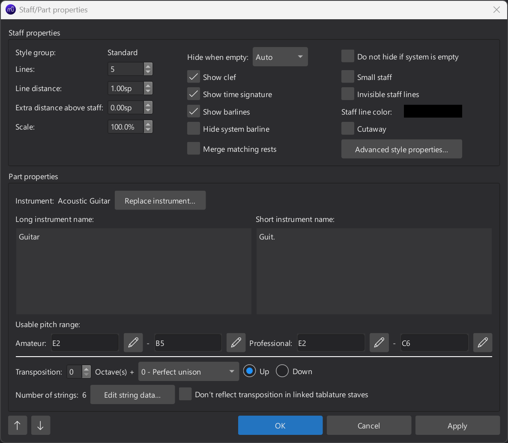
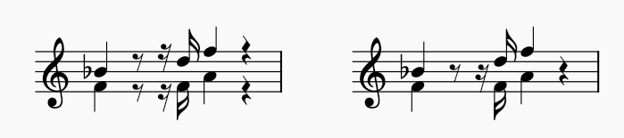
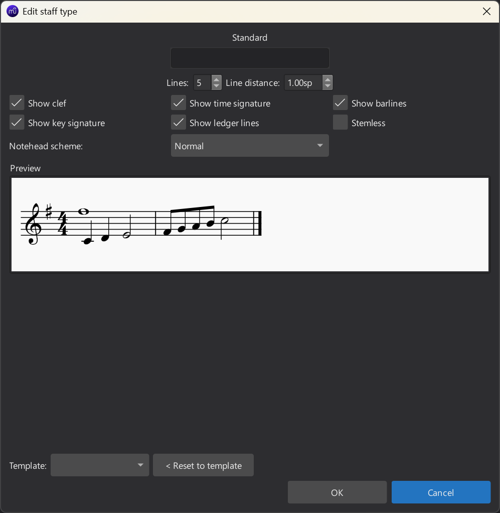
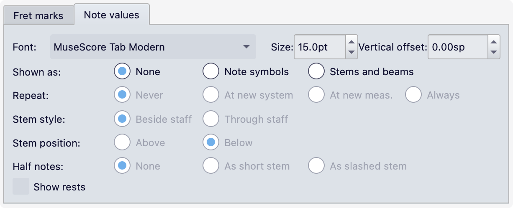

Stave/Part properties
Overview
The Stave/Part properties dialog allows you to change display properties of a stave and the properties of the instrument it belongs to.
To open the dialog:
- Right-click either an empty area in a staff, or the instrument label in the score.
- Select Staff/Part properties…
The up/down arrow buttons in the bottom left of the window will move between staves in the score. Note that any changes you have made to the current staff will be lost unless you click Apply first.

There are four different types of stave, called Style group in the dialog:
- Standard, the most common type, which has two variants:
- One for pitched instruments except for fretted, plucked string instruments.
- One for fretted, plucked string instruments, which has additional options for setting the number of strings and their tuning.
- Tablature, also used for fretted, plucked string instruments, with the same options for configuring strings.
- Percussion, used for unpitched percussion instruments.

An example of each of the basic staff types
For each type, there are pre-defined templates to choose from in the Advanced style properties dialog (see below).
Replacing an instrument can change the staff type, but be aware that doing this may sometimes create an undesirable result with incorrect playback – for example, when replacing a Standard type staff (e.g. Flute) with a Percussion type (e.g. Drum Kit).
Stave properties
The top section of the dialog allows you to customise the appearance of the stave. These options are common to all stave types.
Note that all these settings apply only to the specific staff being edited.
First column:
- Style group: Shows the staff type (Standard, Tablature, Percussion).
- Lines: The number of staff lines. Most pitched instruments use a 5-line staff, but percussion staves may have a different number, and most (though not all) tablature staves will have the same number of lines as the instrument has strings.
- Line distance: The distance between lines, in spaces; 1 is 'normal'. Do not change this to make a larger or smaller stave; use Scale instead.
- Extra distance above staff: Increases or decreases the minimum distance between this staff and the one above. This setting has no effect on the topmost staff of a system. It also affects all systems in the score. To change the spacing on a single system, use a spacer.
- Scale: The size of the staff, and its contents, as a custom percentage. To change the scale of all staves in a score, use Page Settings > Scaling.
Second column:
- Hide when empty: This setting overrides the score-wide settings for staff hiding for the current staff. See Excluding specific staves from being hidden for details.
- Show clef: Whether clefs will appear on the staff.
- Show time signature: Whether time signatures will appear on the staff.
- Show barlines: Whether barlines will be drawn on the staff.
- Hide system barline: Whether the initial barline at the left edge of the system should be hidden.
- Merge matching rests: When checked, simultaneous rests in multiple voices will be merged (drawn on top of each other). This can save time hiding or deleting extra rests:

Merge matching rests off (left) and on (right)
Third column:
- Do not hide if system is empty: Specifies that this staff will be shown when all other staves in a system are empty (see Choosing which staff to show when the entire system is empty).
- Small staff: Makes the staff small (cue-sized), following the size defined in Format -> Style -> Sizes -> Small staff size. For a custom size, use Scale, in the first column.
- Invisible staff lines: Makes staff lines invisible.
- Staff line colour: Change the colour of the staff lines.
- Cutaway: Suppress the drawing of staff lines in empty measures (see Cutaway staves).
- The Advanced style properties... button opens a separate dialog, described below.
Advanced style properties

Some settings in this dialog are common to all stave types. Those in the first two rows are simply duplicates of settings found in the main Stave/part properties dialog (Lines, Line distance, Show clef, Show time signature, Show barlines).
The Template dropdown, at the bottom of the window, lets you apply a a predefined template style to the staff. For tablature staves, the templates include various numbers of staff lines and notation styles. For percussion staves, the templates include settings for different numbers of staff lines.
To apply a template:
- Make a selection from the Template dropdown list.
- Press the < Reset to template button.
- Press OK.
For all styles except percussion, the Preview shows a rendered example of notation that reflects the settings in the dialog, so you can see the effect of the changes you make.
The remaining settings differ according to the current staff type.
Standard and percussion staff styles only
These settings are also duplicated from the main Stave/Part properties dialog.
- Show key signature, Show ledger lines: Control whether key signatures and ledger lines should be drawn.
- Stemless: Will draw notes without stems, flags or beams.
Standard staff style only
- Notehead scheme: Specifies which type of noteheads to use (e.g. pitch names, shape notes). See Notehead schemes.
Tablature staff style only
- Upside down: When unchecked (default), the top staff line will refer to the highest string, and the bottom line is the lowest string. When checked, this is reversed (used, for example, for Italian-style lute tablature).
The remaining settings are split into two separate tabs.
Fret marks

To choose the font for fret marks, there are two options:
- Text style: Use a text style. This provides a dropdown from which you can select which text style to use (by default, Tablature fret number). The Edit text style button will take you to the page for the chosen style in Text styles, where you can configure it like any other.
- Tab font preset: Use one of eight built-in fonts, which support all the necessary symbols for various different styles, both modern and historic. This provides three sub-options:
- Font: Which of the built-in fonts to use.
- Size: Font size for fret marks. The built-in fonts usually look good at a size of 9–10pt.
- Vertical offset: Applies a vertical offset to the symbols. Positive values move them down, negative ones move them up. It should not normally be necessary to change this, but it may be useful when encountering a font with unconventionally aligned symbols.
The remaining options configure the notation style:
- Marks are: Either Numbers (1, 2, 3...) or Letters (a, b, c...). When letters are used, 'j' is skipped.
- Marks are drawn: Either On lines (i.e. vertically centered on the lines) or Above lines.
- Lines are: Either Continuous (the lines will pass straight through fret marks) or Broken (lines will be masked when crossing fret marks).
- Show fingering in tablature: Sets whether fingerings added from the Guitar palette should be drawn or not
Note values

These settings configure how rhythms are indicated on tablature staves.
The Shown as setting is actually the most important, as it determines which of the other options are relevant or enabled. There are three options:
- None: No rhythm is indicated; all the other options in this tab will be disabled and/or ignored.
- Note symbols: Rhythm will be indicated with symbols in the shape of notes above the staff.
- Stems and beams: Rhythm will be notated using stems, flags and beams, just as on a standard staff.
If Note symbols is selected, these settings apply:
- Font: The font used to draw the note duration symbols. Currently five fonts are provided, supporting all the necessary symbols in five different styles (modern, Italian tablature, French tablature, French baroque (headless), French baroque).
- Size: Font size for the note duration symbols. The built-in fonts usually look good at a size of 15pt.
- Vertical offset: Applies a vertical offset to the symbols. Positive values move them down, negative ones move them up.
- Repeat: By default, note duration symbols are only shown when the duration changes. This setting specifies when they should be repeated:
- Never: Symbols are never repeated.
- At new system: Always draw the duration symbol at the start of a new system.
- At new measure: Always draw the duration symbol at the start of a new measure.
- Always: Draw a duration symbol for every note.
- Show rests: Whether note duration symbols should also be drawn for rests. If shown, they are drawn at a slightly lower position than those for notes.
If Stems and beams is selected, these settings apply:
- Stem style: Stems and beams can be drawn either Beside staff (always outside the staff, above or below) or Through staff (being drawn through the staff to reach the fret marks, just as stems go to noteheads on normal staves).
- Stem position: Whether stems and beams are drawn Above or Below the staff; this is only available if Stem style is set to Beside staff (if Through staff is selected, stems and beams are always drawn below the fret marks).
- Half notes: How half notes are indicated. On a normal staff, this is done by changing the notehead, which is not an option in tablature. The options are:
- None: Do not draw a stem.
- As short stem: Draw a shortened stem (only available when Stem style is set to Beside staff).
- As slashed stem: Draw a stem with a double tremolo slash through it.
Part properties
This section of the dialog should more properly be called **Instrument properties**. The current wording is leftover from earlier app versions.
Instrument identifies which instrument is assigned to the staff. To change the instrument, click the Replace instrument button and select an instrument from the Select instrument dialog that appears. This replaces the instrument for the staff, including changing playback, staff name, transposition, etc. If there are existing Staff type change items on the staff, these may now cause unpredictable results.
The default values for all the other settings in this section are taken from MuseScore Studio's instrument definitions.
Long instrument name and Short instrument name are the labels which can be shown to the left of the staves on the score. To configure which are shown where, go to Format -> Style -> Score -> Instrument names.
Usable pitch range defines the usable range for the instrument. By default, MuseScore will highlight notes which fall outside of these ranges. (The highlighting only affects the display on screen, and does not affect printing or exporting.) To disable or re-enable this functionality:
- Select Edit -> Preferences (Mac: MuseScore -> Preferences) from the menu bar.
- Select Note input.
- Toggle Colour notes outside of usable pitch range.
There are two ranges defined:
- Amateur: A more limited range which can be assumed to be practical for non-professional players. Notes outside this range are coloured olive green/dark yellow.
- Professional: The full range of the instrument which is accessible to professional players. Notes outside this range are colored red.
Many of these range limits are subjective and open to discussion. If you wish to adjust them in your score, click the pencil icons next to each pitch name.
Transposition specifies the instrument's transposition, i.e. the difference between how the pitches are notated and how they actually sound, when the score is not shown in concert pitch. This is specified as a combination of:
- Octave(s): The number of octaves.
- An interval between 0 and 12 semitones, selected from the dropdown.
- Up/down: The direction of the transposition.
For transpositions other than simple octave transpositions (i.e. where an interval other than Perfect unison) is chosen from the dropdown), an additional dropdown will be shown, Prefer sharps or flats for transposed key signatures, which specifies which key signature to use where there are two enharmonic equivalents available, for example B major and C flat major:
- None: Match the type of accidental of the untransposed key signature, when possible.
- Flats: Use the version of the key signature with flats, when one exists.
- Sharps: Use the version with sharps, when it exists.
- Auto: Use whichever version has fewer accidentals; if there is no difference, match the accidental of the untransposed key signature.
Additional settings for fretted, plucked string instruments
There is a final row, only shown for fretted, plucked string instruments (on both Standard and Tablature stave styles):
- Number of strings shows the number of strings for the instrument.
- Edit string data…: This button opens a dialog where you can change the number of strings and their tuning. See Changing tuning for details.
- Don't reflect transposition in linked tablature staves: If turned off, any tablature staves linked to this stave will not reflect the transposition of the main stave.